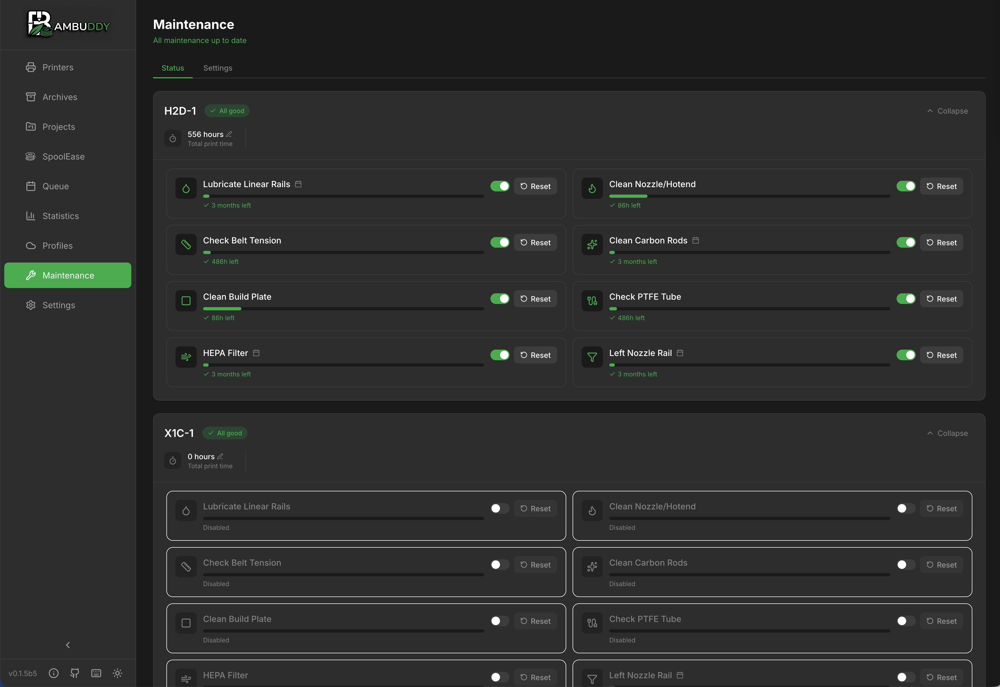
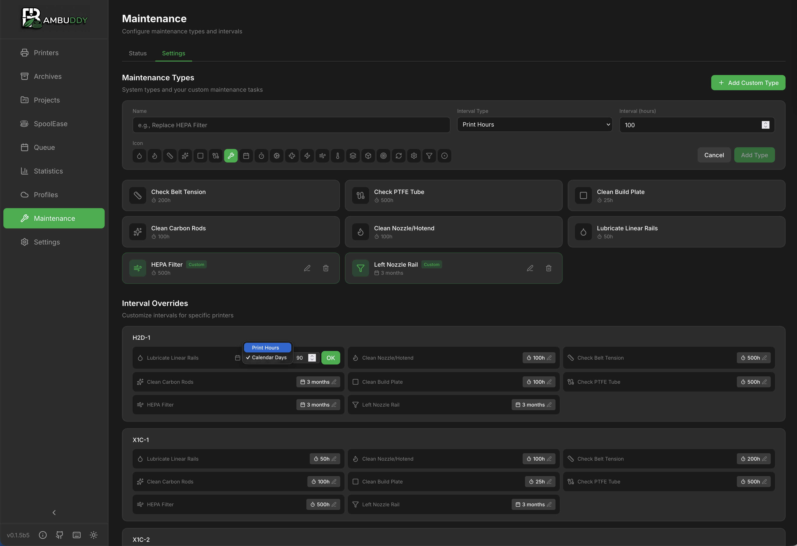

Maintenance Tracking
Keep your printers in top condition with scheduled maintenance reminders.
-
Interval-Based Reminders
Set reminders based on print hours or calendar days.
-
Per-Printer Tracking
Independent maintenance schedules for each printer in your fleet.
-
Custom Maintenance Types
Define your own maintenance tasks with custom icons and intervals.
-
Overdue Alerts
Visual indicators and notifications when maintenance is due.
-
Firmware Update Helper
Check and upload firmware updates for LAN-only printers directly to SD card. Printer cards show a color-coded firmware version badge — green when up to date, orange when an update is available. The update dialog lists every version announced on Bambu's wiki with Usable/Unavailable/Installed badges per row — install intermediate versions that were skipped by the OTA channel, or roll back to an older firmware without hand-flashing files.
-
Support Bundle Generator
Enable debug logging and download a comprehensive diagnostic bundle for issue reporting. Includes printer connectivity, integration status, network info, package versions, database health, and Docker details. All data privacy-filtered — no IPs, names, or serial numbers included.
-
In-App Bug Reporting
Submit bug reports directly from the UI with optional screenshot (upload, paste, or drag & drop), interactive debug log capture with a 3-step guided flow (start logging, reproduce the issue at your own pace, stop & submit), and system info. Reports create GitHub issues via a secure relay. Auto-stops after 5 minutes. Privacy-first: all logs are sanitized and sensitive data is never included. Expandable data privacy notice details exactly what is collected.

